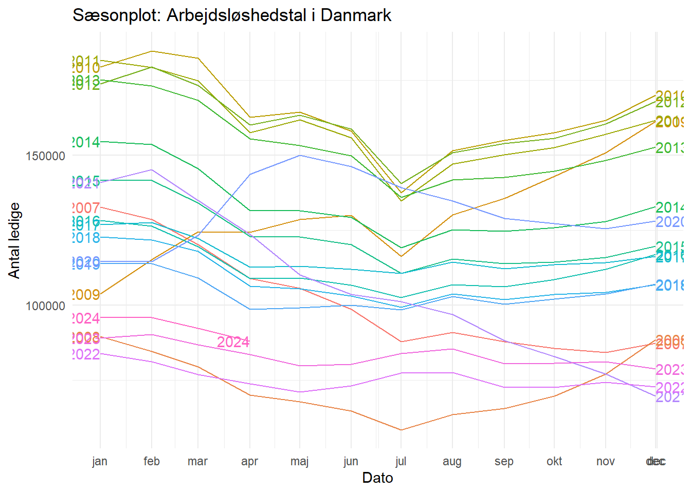
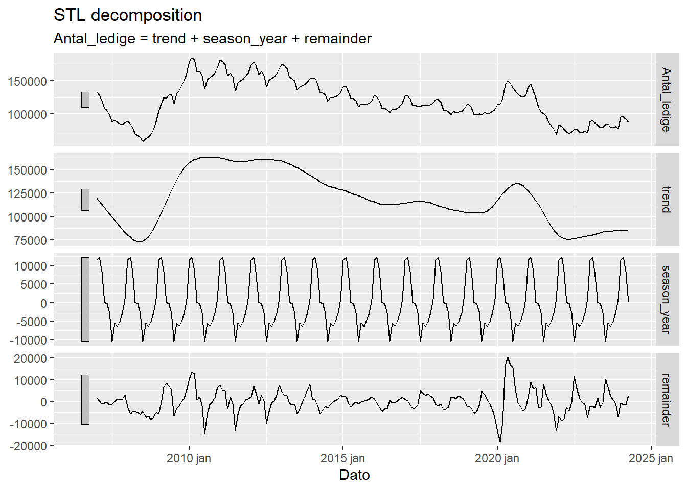
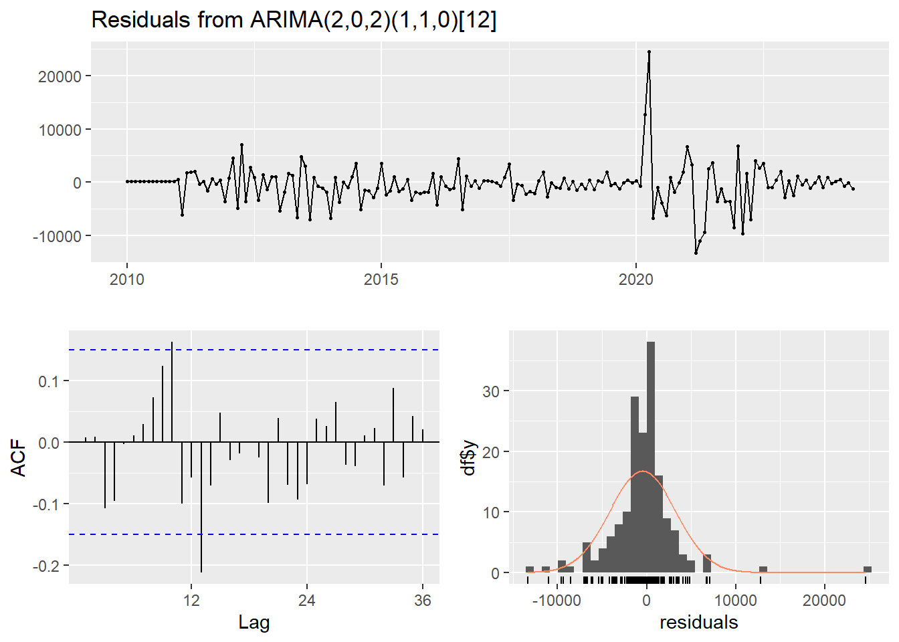
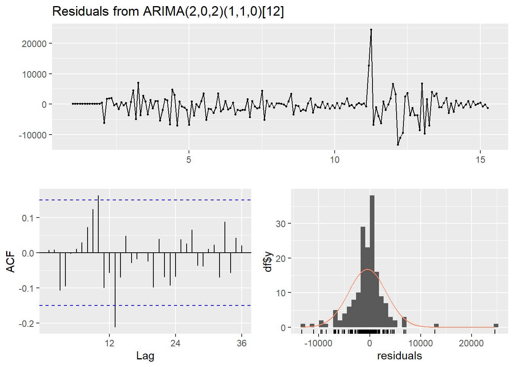
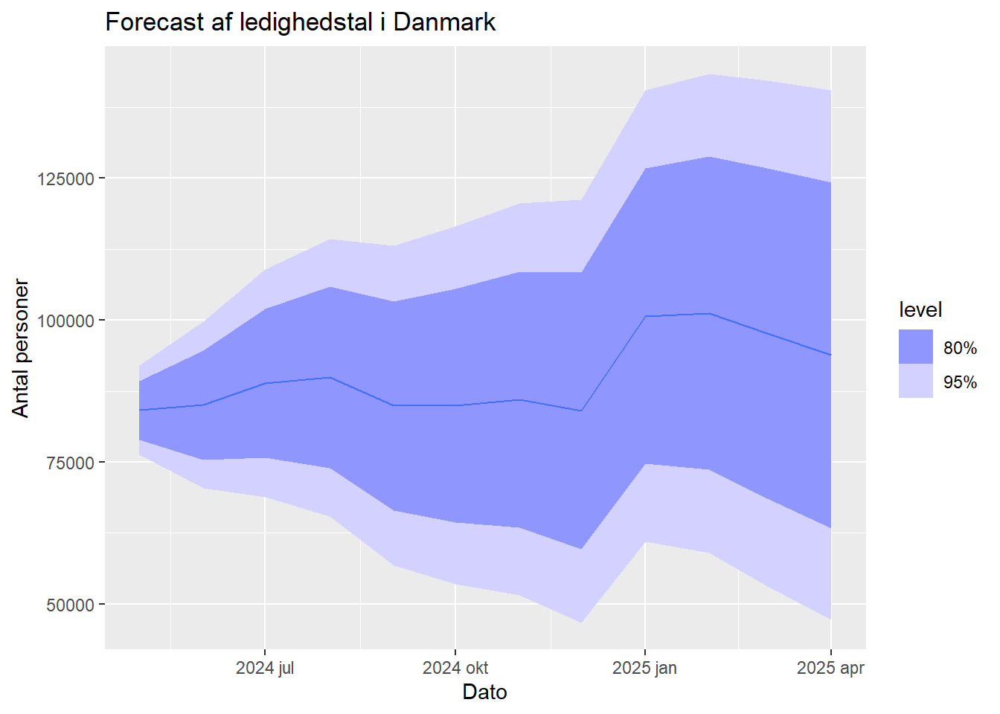
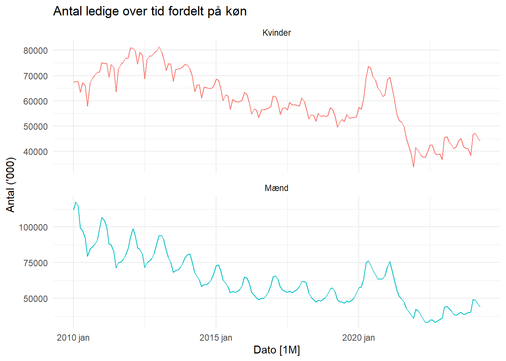

Vi starter med at indlæse data, samt at konvertere datasættet til en tibble
Code
dataframe_dk <-read_excel("Ledige.xlsx")dataframe_dk <- dataframe_dk %>%mutate(Dato =yearmonth(Dato))# Konverter data til en tsibbletsibble_data <- dataframe_dk%>%as_tsibble(index = Dato)
Visualisering
Datasættet bliver visualiseret, for at få en ide om hvordan det ser ud.
Code
# Omdan data til et format der kan bruges af plotlyts_data <- tsibble_data %>%as_tibble() %>%rename(Tid = Dato, Værdi = Antal_ledige)# Konverter 'Tid' kolonnen til Date formatts_data <- ts_data %>%mutate(Tid =as.Date(Tid))# Lav et interaktivt plotly plotplot_ly(ts_data, x =~Tid, y =~Værdi, type ='scatter', mode ='lines') %>%layout(title ='Interaktiv Tidsserie Plot',xaxis =list(title ='Tid', tickformat ="%Y-%m", tickmode ="auto", nticks =20),yaxis =list(title ='Antal Ledige'))
Code
# Visualiser data med gg_seasontsibble_data %>%gg_season(Antal_ledige, labels ="both") +labs(y ="Antal ledige",title ="Sæsonplot: Arbejdsløshedstal i Danmark") +theme_minimal()

STL og spikiness/største sæsonudsving
Nu undersøges datasættet for spikiness, for at finde ud af hvor stabilt datasættet er, samt at finde det største udsving. Dette gøres for at få en ide om hvilke modeller der kan være passende at anvende. Der anvendes også en STL dekomposition, for at undersøge datasættet for trend og sæson, ligeledes for at vurdere hvilke modeller der kan være passende.
Code
fit <- tsibble_data %>%model(stl =STL(Antal_ledige ~season(window ="periodic")))# Beregn komponenter af STL-dekompositiondecomp <-components(fit)# Plot STL-dekompositionenautoplot(decomp)

Code
# Identificer den måned med det største sæsonudsvingseasonal_peak <- decomp %>%as_tibble() %>%filter(season_adjust ==max(season_adjust, na.rm =TRUE)) %>%select(Dato, season_adjust)# Print resultatetprint(seasonal_peak)
# A tibble: 1 × 2
Dato season_adjust
<mth> <dbl>
1 2010 mar 173896.
Code
# Beregn spikinessremainder <- decomp$remainder# Funktion til at beregne spikinesscalculate_spikiness <-function(remainder) { n <-length(remainder) leave_one_out_var <-sapply(1:n, function(i) var(remainder[-i])) spikiness <-var(leave_one_out_var)return(spikiness)}spikiness_value <-calculate_spikiness(remainder)# Print spikinessprint(paste("Spikiness:", spikiness_value))
Det konstateres at datasættet med stor sandynlighed har sæson. Der kan ligeledes anes en trend indtil 2020, hvor COVID-19 havde sin indflydelse. COVID-19 betragtes som en outlier. Det samme gælder for året 2009, hvor der var finanskrise. Derfor sorteres observationer før 2010 fra. Det vurderes at trenden efter 2020 ikke er den samme som inden, og derfor beholdes obsevationer efter COVID-19
Manuel (S)ARIMA
Her vurderes det hvilke ARIMA og SARIMA modeller der bør tages betragtning til at forecaste Ledighed.
Test om data er stationær
Før udføres en ADF test, for at vurdere om datasættet er stationært.
Code
# Antag at original_ts er din tidsserie for de originale dataoriginal_ts <-ts(tsibble_data$Antal_ledige, frequency =12, start =c(2010, 1))# Udfør ADF-testen på de originale dataadf_test_original <-ur.df(original_ts, type ="drift", selectlags ="AIC")# Udtræk nødvendige værdier fra ADF-testenadf_summary_original <-summary(adf_test_original)test_statistic_original <- adf_summary_original@testreg$coefficients[2, 3]critical_values_original <- adf_summary_original@cval# Print resultaterne for de originale datacat("ADF Test Resultater for Originale Data:\n")
# Evaluér om de originale data er stationæreif (test_statistic_original < critical_values_original["tau2", "5pct"]) {cat("Konklusion: De originale data er stationære.\n")} else {cat("Konklusion: De originale data er ikke stationære.\n")}
Konklusion: De originale data er ikke stationære.
Efter udførelse af ADF testen, vurderes det, at datasættet ikke er stationært, da Test-statistikken er større end alle tre niveauer.
Sæsondifferenciering og test om data er stationære
Da datasættet ikke er stationært og det vurderes at der er stærk sæson i datasættet, udføres sæson differencieres der. Derefter kører ADF testen igen, for at tjekke om datasættet derefter er stationært.
Code
# Anvend sæsondifferenciering på tidsserientsibble_data <- tsibble_data %>%mutate(Seasonal_Diff =difference(Antal_ledige, lag =12))# Konverter sæsondifferencierede data til en tidsserie objektseasonal_diff<-ts(tsibble_data$Seasonal_Diff, frequency =12, start =c(2009, 1))# Fjern NA-værdier før ADF-testseasonal_diff <-na.omit(seasonal_diff)# Udfør ADF-test på de sæsondifferencierede Box-Cox transformerede dataadf_test_seasonal_diff <-ur.df(seasonal_diff, type ="drift", selectlags ="AIC")# Udtræk nødvendige værdieradf_summary <-summary(adf_test_seasonal_diff)test_statistic <- adf_summary@testreg$coefficients[2, 3]critical_values <- adf_summary@cval# Print resultaternecat("ADF Test Resultater:\n")
# Evaluér om data er stationæreif (test_statistic < critical_values["tau2", "5pct"]) {cat("Konklusion: Dataene er stationære.\n")} else {cat("Konklusion: Dataene er ikke stationære.\n")}
Konklusion: Dataene er stationære.
Da Test-statistikken er mindre end alle tre nivauer afvises nul hypotesen og det vurderes at datasættet er stationært.
ACF Plot - Valg af modeller
ACF og PACF plot visualiseres, for at vurdere hvilke modeller der kan være passende til forecasting af datasætte.
En tydelig spike ved lag 12 indikerer at sæsoncycle er på 12 måneder og dermed årlig.
Viser en langsom aftagende sæsonmæssig korrelation, som tyder på en stærk sæsonkomponent i dataene.
Den langsomme aftagning efter det første lag kan indikere behovet for yderligere differenciering eller en model med en sæsonkomponent.
Den høje autokorrelation ved lag 1 indikerer, at en MA(1) model kan være passende. Da der er signifikante korrelationer efter lag 1, kan det også være nyttigt at prøve en højere ordre MA-model, som f.eks. MA(2).
PACF
En skarp cut-off efter lag 1 og 2 og enkelte spikes ved sæsonlags, hvilket kunne indikere en AR(1) model.
Dette leder os til følgende modeller at arbejde videre med:
ACF plottet har make signifikante spikes, og indkiationer for aftagende korelation over tid. Det kan betyde at der er sæson i data. Derfor vælges SARIMA modeller.
Manuel SARIMA
Følgende modeller vælges:
SARIMA(1,1,1), (1, 1, 0)(12)
SARIMA(1,1,1), (1, 1, 1)(12)
SARIMA(2,1,1), (1, 1, 0)(12)
SARIMA(2,1,1), (1, 1, 1)(12)
Auto ARIMA
Code
#autoarima# Konverter data til en tsibbletsibble_data_original <- dataframe_dk %>%mutate(Dato =yearmonth(Dato)) %>%as_tsibble(index = Dato)# Filtrer data til de relevante periodertsibble_data_original <- tsibble_data_original %>%filter(year(Dato) >=2010)# Konverter dataene til et tidsserie objektoriginal_ts <-ts(tsibble_data_original$Antal_ledige, frequency =12, start =c(2010, 1))# Kør auto.arima for at finde den bedste ARIMA modelbest_arima_model <-auto.arima(original_ts, seasonal =TRUE, stepwise =FALSE, approximation =FALSE)# Udskriv opsummeringen af den bedste model fundet af auto.arimasummary(best_arima_model)
Series: original_ts
ARIMA(2,0,2)(1,1,0)[12]
Coefficients:
ar1 ar2 ma1 ma2 sar1
1.8781 -0.8924 -0.3804 -0.4039 -0.3865
s.e. 0.0600 0.0561 0.0955 0.0796 0.0742
sigma^2 = 15366760: log likelihood = -1551
AIC=3114.01 AICc=3114.56 BIC=3132.46
Training set error measures:
ME RMSE MAE MPE MAPE MASE
Training set -464.4972 3721.284 2250.804 -0.4361723 1.922344 0.1685566
ACF1
Training set 0.008032401
Code
checkresiduals(best_arima_model)

Ljung-Box test
data: Residuals from ARIMA(2,0,2)(1,1,0)[12]
Q* = 31.067, df = 19, p-value = 0.0397
Model df: 5. Total lags used: 24
Code
#Series: original_ts #ARIMA(2,0,2)(1,1,0)[12]
Auto ARIMA har defineret følgende model:
#ARIMA(2,0,2)(1,1,0)[12]
ETS model
I det følgende defineres en ETS model. Exponential Smoothing modeller er særligt godt til at håndtere outliers og håndtere sæson og trendelementer.
Code
dataframe_dk <- dataframe_dk %>%mutate(Dato =yearmonth(Dato))# Konverter data til en tsibbletsibble_data_ets <- dataframe_dk%>%as_tsibble(index = Dato)tsibble_data_ets <- tsibble_data_ets %>%filter(year(Dato) >=2010)# Tilpas ETS modellenfit_ets <- tsibble_data_ets |>model(ETS(Antal_ledige))# Rapportér den valgte modelreport(fit_ets)
ETS koden har defineret at den bedste model til dette datasæt er ETS(M,N,M).
Error (Fejl) - Multiplikativ (M):
Multiplikativ fejl: I denne model multipliceres fejlkomponenten med de øvrige komponenter. Dette betyder, at variabiliteten af dataene afhænger af niveauet af tidsserien.
Dette betyder, at fejlene skalerer med niveauet af tidsserien.
Trend - Ingen trend (N):
Ingen trend: Der er ingen underliggende trendkomponent i modellen. Dette betyder, at niveauet af tidsserien forbliver konstant over tid, når der ikke tages højde for sæsonvariationer og fejl.
Seasonal (Sæson) - Multiplikativ (M):
Multiplikativ sæson: Sæsonkomponenten multipliceres med niveaukomponenten, hvilket betyder, at sæsonudsvingene varierer proportionalt med niveauet af tidsserien.
En ETS(M,N,M)-model antager, at dataene har en multiplikativ fejlstruktur og en multiplikativ sæsonkomponent, men ingen underliggende trend. Dette betyder, at modellen er velegnet til tidsserier, hvor sæsonvariationerne varierer proportionalt med niveauet af serien, og hvor der ikke er nogen langsigtet trend.
Evaluering
Modellerne krydsvalideres for at vurdere modellens performance. Der vurderes på følgende metrikker: RMSE, MAE og MAPE.
Code
results <- tsibble_data |>slice(-n()) |># Fjerner den sidste observation for at teste modelpræcisionenstretch_tsibble(.init =20) |># Initialiserer de første 20 datapunkter for modeltræningmodel(SARIMA_111_101 =ARIMA(Antal_ledige ~pdq(1, 1, 1) +PDQ(1, 1, 0, period =12)),SARIMA_111_111 =ARIMA(Antal_ledige ~pdq(1, 1, 1) +PDQ(1, 1, 1, period =12)),SARIMA_211_110 =ARIMA(Antal_ledige ~pdq(2, 1, 1) +PDQ(1, 1, 0, period =12)),SARIMA_211_111 =ARIMA(Antal_ledige ~pdq(2, 1, 1) +PDQ(1, 1, 1, period =12)),AutoSARIMA_202_110 =ARIMA(Antal_ledige ~pdq(2, 0, 2) +PDQ(1, 1, 0, period =12)),ETS(Antal_ledige) ) |>forecast(h =1) |># Laver en 1-step forudsigelseaccuracy(tsibble_data) |># Beregner nøjagtighedsstatistikker baseret på faktiske dataselect(.model, RMSE, MAPE, MAE) # Vælger kun modellens navn, RMSE og MAPE for visning# Vis resultaterneprint(results)
Ljung-Box test
data: Residuals from ARIMA(1,1,1)(1,1,0)[12]
Q* = 32.752, df = 21, p-value = 0.04904
Model df: 3. Total lags used: 24
Code
checkresiduals(nextbest_model)

Ljung-Box test
data: Residuals from ARIMA(2,0,2)(1,1,0)[12]
Q* = 31.067, df = 19, p-value = 0.0397
Model df: 5. Total lags used: 24
Best_model
Tidsserie plot af residualer: Der er en tydelig spike omkring lag 10, hvilket kan indikere en outlier eller en fejl i modellen. Ellers ser residualerne ud til at være tilfældigt fordelt omkring nul.
ACF plot af residualer: Der er nogle signifikante spikes, især ved lavere lags (f.eks. lag 1), hvilket kan indikere, at der er autokorrelation tilbage i residualerne, som modellen ikke har fanget.
Histogram af residualer: Histogrammet viser, at residualerne ikke er perfekt normalfordelte. Der er en vis skævhed og outliers, som kan ses i halerne af fordelingen.
Ljungbox testen viser en værdi på 0,049 hvilket ligger marginalt tæt på 0,05
Nextbest_Model
Tidsserie plot af residualer: Den store spike omkring lag 10 bør undersøges nærmere, da det kan være en outlier eller en problematisk observation.
ACF plot af residualer: De få signifikante spikes indikerer, at der stadig er autokorrelation tilbage i residualerne. Dette kan betyde, at modellen kan forbedres yderligere.
Histogram af residualer: Residualerne er ikke perfekt normalfordelte og viser en vis skævhed. Dette kan indikere, at modellen ikke fuldstændigt fanger dataenes struktur.
Ljungboxtesten viser en p-værdi på 0,0397 hvilket bør ligge over 0,05 hvilke betyder at nulhyptosen ikke kan afvises.
På baggrund af disse observationer udvælges best_model: SARIMA_111_101
Forecasting
I det følgende afsnit forecastes de efterfølgende 12 måneder.
forecast_result <- best_model %>%forecast(h =12)# Konverter forecast_result til en tibbleforecast_result_tibble <-as_tibble(forecast_result)# Lav en flot tabel med kableExtraforecast_result_tibble %>%select(Dato, .mean) %>%rename(`Forecast Date`= Dato, `Forecast Mean`= .mean) %>%kable("html", caption ="Forecast Results") %>%kable_styling(bootstrap_options =c("striped", "hover", "condensed", "responsive"))
Forecast Results
Forecast Date
Forecast Mean
2024 maj
84128.36
2024 jun
85083.56
2024 jul
88889.41
2024 aug
89890.95
2024 sep
84922.56
2024 okt
84991.42
2024 nov
86046.38
2024 dec
83997.17
2025 jan
100720.98
2025 feb
101225.78
2025 mar
97658.92
2025 apr
93815.85
Code
autoplot(forecast_result) +labs(title ="Forecast af ledighedstal i Danmark",y ="Antal personer")

Ny løsning - Forecasting af Hierachial Timeseries
For at forsøge at forbedre modellen indhentes yderligere data. I det følgende afsnit udføres der forecasting af hierakiske datasæt. Det øverste niveau er Det totale antal ledige. Der tilføjes yderligere e niveau, nemlig ledighed fordel på mænd og kvinder.
Data indlæses og renses og derefter kombineres datasættet med ledighed fordelt på mænd og kvinder
Code
# Læs data fra Excel-arkfile_path <-"Ledigekøn.xlsx"# Udskift med den faktiske sti til din filledigekon <-read_excel(file_path) # Tilpas hvis nødvendigt# Rens kolonnenavneledigekon <- ledigekon %>%clean_names()colnames(ledigekon) <-gsub("^x", "", colnames(ledigekon))# Omdan dataene til langt formatlong_data <- ledigekon %>%pivot_longer(cols =-`1`, # Bevar den første kolonne og omdan restennames_to ="Dato",values_to ="Value" ) %>%pivot_wider(names_from =`1`,values_from = Value )# Konverter 'Dato' til yearmonth formatlong_data <- long_data %>%mutate(Dato =sub("M", "-", Dato), # Erstat 'M' med '-'Dato =ymd(paste0(Dato, "-01")), # Tilføj '-01' for at fuldende datoenDato =yearmonth(Dato) # Konverter til yearmonth )combined_data <-left_join(long_data, dataframe_dk, by ="Dato")# Fjern observationer inden 2010combined_data <- combined_data %>%filter(year(Dato) >=2010)# Konverter data til et tsibble objektcombined_data <-as_tsibble(combined_data, index = Dato)
Agregering af data med agregate_key()
Code
# Omform data til langt format for at bruge aggregate_keylong_data <- combined_data %>%pivot_longer(cols =c(Mænd, Kvinder), names_to ="Køn", values_to ="Antal")# Aggregér dataene med aggregate_keyaggregated_data <- long_data |>aggregate_key(Køn, Antal =sum(Antal, na.rm =TRUE))# Se et udsnit af det aggregerede dataprint(head(aggregated_data))
# A tsibble: 6 x 3 [1M]
# Key: Køn [1]
Dato Køn Antal
<mth> <chr*> <dbl>
1 2010 jan <aggregated> 179411.
2 2010 feb <aggregated> 184857
3 2010 mar <aggregated> 182319.
4 2010 apr <aggregated> 162773.
5 2010 maj <aggregated> 164430.
6 2010 jun <aggregated> 158162.
Code
# Brug filter og autoplot som ønsketaggregated_data |>filter(!is_aggregated(Køn)) |>autoplot(Antal) +labs(y ="Antal ('000)",title ="Antal ledige over tid fordelt på køn") +facet_wrap(vars(Køn), scales ="free_y", ncol =1) +theme_minimal() +theme(legend.position ="none")

Her ses den agregrede ledighed fordelt på køn.
Hierakisk Tidsserie
På baggrund af de agregerede data defineres en ETS model. På baggrund af tidsvariablen og ledighed for mænd og kvinder, undersøges det om en bedre model kan defineres.
Code
# Definer start- og slutdatoer for testperiodentest_start_date <-yearmonth("2023 May")test_end_date <-yearmonth("2024 Apr")# Opdel data i trænings- og testdatasættrain_data <- aggregated_data %>%filter(Dato < test_start_date)test_data <- aggregated_data %>%filter(Dato >= test_start_date & Dato <= test_end_date)# Modellér dataene med ETSfit <- train_data |>model(base =ETS(Antal)) |>reconcile(bu =bottom_up(base),ols =min_trace(base, method ="ols"),mint =min_trace(base, method ="mint_shrink") )# Print modellen for at se resultaterneprint(fit)
# A mable: 3 x 5
# Key: Køn [3]
Køn base bu ols mint
<chr*> <model> <model> <model> <model>
1 Kvinder <ETS(A,N,A)> <ETS(A,N,A)> <ETS(A,N,A)> <ETS(A,N,A)>
2 Mænd <ETS(M,Ad,M)> <ETS(M,Ad,M)> <ETS(M,Ad,M)> <ETS(M,Ad,M)>
3 <aggregated> <ETS(A,N,A)> <ETS(A,N,A)> <ETS(A,N,A)> <ETS(A,N,A)>
Her ses en oversigt over de modeller der er definerede for top niveauet, samt for mænd og kvinder.
Code
# Lav forudsigelser for testperioden (maj 2023 til april 2024)forecasts_test <- fit %>%forecast(new_data = test_data)# Beregn RMSE ved hjælp af accuracy()accuracy_measures_test <- forecasts_test %>%accuracy(test_data)# Udtræk og vis MAE, RMSE og MAPE værdiernemae_rmse_mape_values_test <- accuracy_measures_test %>%select(.model, Køn, MAE, RMSE, MAPE)print(mae_rmse_mape_values_test)
# A tibble: 12 × 5
.model Køn MAE RMSE MAPE
<chr> <chr*> <dbl> <dbl> <dbl>
1 base Kvinder 2250. 2779. 5.42
2 base Mænd 1617. 1905. 3.87
3 base <aggregated> 3270. 4515. 3.94
4 bu Kvinder 2250. 2779. 5.42
5 bu Mænd 1617. 1905. 3.87
6 bu <aggregated> 2682. 3317. 3.22
7 mint Kvinder 2271. 2794. 5.47
8 mint Mænd 1811. 2154. 4.37
9 mint <aggregated> 2784. 3572. 3.34
10 ols Kvinder 2452. 2968. 5.86
11 ols Mænd 1927. 2309. 4.67
12 ols <aggregated> 3047. 4072. 3.67
Metrikker for de tre metoder vurderes her. Det ses her at metoden bu (bottoms up) har den bedste performance for den totale ledighed (<agregated>). Derfor vælges denne model til forecasting.
Krydsvalidering
Code
# Funktion til at udføre krydsvalidering på hierarkiske modellercross_validate_hierarchical <-function(data, h =1) { results <- aggregated_data |>slice(-n()) |># Fjern den sidste observation for at teste modelpræcisionenstretch_tsibble(.init =20) |># Initialiser de første 20 datapunkter for modeltræningmodel(base =ETS(Antal) ) |>reconcile(bu =bottom_up(base) ) |>forecast(h = h) |># Laver en 1-step forudsigelseaccuracy(aggregated_data) |># Beregner nøjagtighedsstatistikker baseret på faktiske datafilter(.model =="bu") |># Filtrér kun for "bu" modellenselect(.model, Køn, RMSE, MAPE, MAE) # Vælg relevante kolonnerreturn(results)}# Udfør krydsvalidering på hierarkiske modellerresults_hierarchical <-cross_validate_hierarchical(tsibble_data)# Vis resultaterneprint(results_hierarchical)
# A tibble: 3 × 5
.model Køn RMSE MAPE MAE
<chr> <chr*> <dbl> <dbl> <dbl>
1 bu Kvinder 2785. 3.35 1836.
2 bu Mænd 2881. 3.09 1827.
3 bu <aggregated> 5389. 3.07 3477.
Forecasting med hierakisk tidsserie
Code
best_model_name <-"bu"# Lav forudsigelser fra den sidste dato i datasættet med den bedste modellast_date <-max(aggregated_data$Dato)future_dates <-expand_grid(Dato =yearmonth(seq.Date(as.Date(last_date) +months(1), by ="month", length.out =12)), Køn =unique(aggregated_data$Køn)) %>%as_tsibble(index = Dato, key = Køn)# Lav forudsigelser med den bedste modelforecasts_futurehieraki <- fit %>%select(best_model_name) %>%forecast(new_data = future_dates)# Konverter forecasts_futurehieraki til en tibbleforecasts_futurehieraki_tibble <-as_tibble(forecasts_futurehieraki)# Lav en flot tabel med kableExtraforecasts_futurehieraki_tibble %>%select(Køn, Dato, .mean) %>%rename(`Køn`= Køn, `Forecast Date`= Dato, `Forecast Mean`= .mean) %>%kable("html", caption ="Forecast Results for Future Hierarchical Data") %>%kable_styling(bootstrap_options =c("striped", "hover", "condensed", "responsive"))
Forecast Results for Future Hierarchical Data
Køn
Forecast Date
Forecast Mean
Kvinder
2024 maj
45045.17
Kvinder
2024 jun
44758.12
Kvinder
2024 jul
40753.09
Kvinder
2024 aug
44485.54
Kvinder
2024 sep
43883.42
Kvinder
2024 okt
43835.64
Kvinder
2024 nov
44093.56
Kvinder
2024 dec
44268.36
Kvinder
2025 jan
47591.01
Kvinder
2025 feb
47372.07
Kvinder
2025 mar
45755.67
Kvinder
2025 apr
42548.50
Mænd
2024 maj
38710.42
Mænd
2024 jun
38068.01
Mænd
2024 jul
37295.34
Mænd
2024 aug
36672.03
Mænd
2024 sep
35833.13
Mænd
2024 okt
37181.52
Mænd
2024 nov
38731.90
Mænd
2024 dec
41127.80
Mænd
2025 jan
47248.92
Mænd
2025 feb
46982.77
Mænd
2025 mar
45410.27
Mænd
2025 apr
42994.36
<aggregated>
2024 maj
83755.59
<aggregated>
2024 jun
82826.13
<aggregated>
2024 jul
78048.43
<aggregated>
2024 aug
81157.57
<aggregated>
2024 sep
79716.55
<aggregated>
2024 okt
81017.16
<aggregated>
2024 nov
82825.47
<aggregated>
2024 dec
85396.16
<aggregated>
2025 jan
94839.93
<aggregated>
2025 feb
94354.84
<aggregated>
2025 mar
91165.94
<aggregated>
2025 apr
85542.86
Code
# Filtrer for kun at vise de aggregerede resultateraggregated_forecasts <- forecasts_futurehieraki %>%filter(Køn =="<aggregated>")
Sammenligning med tidligere model
Code
print(best_model1)
# A tibble: 1 × 4
.model RMSE MAPE MAE
<chr> <dbl> <dbl> <dbl>
1 SARIMA_111_101 4588. 2.44 2690.
Code
print(results_hierarchical)
# A tibble: 3 × 5
.model Køn RMSE MAPE MAE
<chr> <chr*> <dbl> <dbl> <dbl>
1 bu Kvinder 2785. 3.35 1836.
2 bu Mænd 2881. 3.09 1827.
3 bu <aggregated> 5389. 3.07 3477.
Sammenligning af .mean værdier for Aggregated og SARIMA modeller
Dato
Hierakisk Tidsserie
SARIMA
2024 maj
83756
84128
2024 jun
82826
85084
2024 jul
78048
88889
2024 aug
81158
89891
2024 sep
79717
84923
2024 okt
81017
84991
2024 nov
82825
86046
2024 dec
85396
83997
2025 jan
94840
100721
2025 feb
94355
101226
2025 mar
91166
97659
2025 apr
85543
93816
Baseret på metrikkerne vurderes det at ledighed fordelt på mænd og kvinder ikke har forbedret forudsigelsen af den totale ledighed. Samtidig vurderes det at SARIMAs forudsigelse ligger 40 personer fra den faktiske forudsigelse, hvilket kan indikere en bedre præcision.
Anbefalinger
Håndtering af Outliers
Det anbefales at outliers håndteres. Man kan evt. lave en boxcox eller log transformering, for at forbedre håndtering af outliers. Det kan også overvejes at bruge modeller der er særlige robuste overfor outliers som f.eks Robust ARIMA. Man kan også vælge en SARIMAX og inkludere dummyvariabler som f.eks COVID-19.
Relevante variabler
Man kan overveje at tilføje flere eller andre variabler, der kan have indflydelse på Ledighedstallet. Økonomiske variabler som indflation eller høj- og lavkonjuktur kunne overvejes.
Yderligere niveauer
Tilføje flere niveaer. Ledighed fordelt på regioner eller demografi kunne overvejes.
Konklussion
Det vurderes at den hierakiske tidsserie ikke har forbedret præcisionen af forudsigelsen. SARIMA har overordnet bedre RMSE, MAE og MAPE hvilet indikerer en højere præcision.